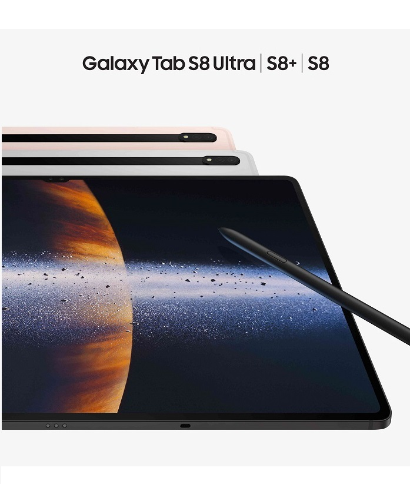

삼성 GOS 사태 어디까지… 갤럭시 S22 이어 갤럭시탭 S8도 긱벤치서 퇴출
최근 불거진 GOS 사태로 삼성전자가 유례없는 불명예를 안고 있다. GOS
사태의 발단이 된 갤럭시S22가 세계 최대 기기 성능 측정 사이트에서 퇴출된
데 이어 갤럭시탭S8도 평가목록에서 삭제되면서다. 15일 긱벤치는 공식
트위터를 통해 "우리는 삼성의 GOS가 어떻게 게임과 앱의 성능을 저해하는지
알게됐다"며 "안드로이드 벤치마크 차트에서 갤럭시탭S8을 삭제했다"고
밝혔다. 긱벤치는 삼성전자 측의 사전 고지 없는 GOS 강제 작동은 성능을
조작한 것이라고 보고 있다. 앞서 긱벤치는 지난 5일에도 "우리는 (GOS 강제
실행을) 성능측정 조작으로 판단했다"며 갤럭시S22, 갤럭시S21, 갤럭시S20,
갤럭시S10 시리즈를 평가목록에서 삭제했다. 긱벤치는 컴퓨터와 스마트폰의
성능측정(벤치마크) 사이트다. 소비자들이 제품을 구입할 때 참고하는 주요
지표 중 하나다. 삼성전자 기기가 긱벤치 평가에서 제외된 것은 이번이
처음이다. 화웨이, 원플러스 등 중국 제조사 외에는 유례가 없다. GOS는
배터리 소모를 줄이고 저온화상 등을 막기 위해 CPU와 GPU 성능을 제한하는
일종의 안전장치다. 삼성은 최근 5년 새 출시된 갤럭시 스마트폰에 GOS를
탑재했고, GOS를 비활성화하기 위해선 유료앱을 사용해야 했다. 하지만
삼성은 갤럭시S22부터 특정 앱 실행 시 무조건 GOS 기능이 작동하도록 했고,
유료 앱으로도 GOS를 삭제할 수 없도록 했다. 결국 고성능 유지를 원하는
사용자들 사이에선 불만이 나왔고, 삼성은 지난 11일 업데이트를 통해 GOS
강제 사용을 해제했다. 삼성의 이 같은 조치에도 GOS 사태는 좀처럼 가라앉지
않는 분위기다. 일부 사용자들 사이에선 "게임을 잘 할 수 있는 스마폰
성능이라고 광고했는데 속았다" "100만원이 넘는 저사양 스마트폰하며
소비자를 기만했다"며 분노를 표출하고 있다. 현재 공정거래위원회는 해당
사안을 조사 중에 있고, GOS 피해 소비자들은 삼성전자를 상대로 집단소송을
준비하고 있다.
삼성 '갤럭시 S22 GOS' 표시광고법 위반 의혹, 공정위 본부서 조사
삼성전자가 최근 출시한 스마트폰 갤럭시S22 시리즈와 관련한 표시광고법
위반 의혹을 공정거래위원회 본부에서 조사한다. 11일 관련 업계에 따르면
공정위는 최근 서울사무소로부터 삼성전자가 '게임 옵티마이징 서비스'(GOS)
기능과 관련해 표시광고법을 위반했다는 신고를 넘겨받아 조사에 착수했다.
통상 신고 사건은 지방사무소에서 접수해 처리하지만, 해당 사안이
소비자에게 미치는 영향력 등을 고려해 사건을 공정위 본부로 이첩해
조사하기로 한 것으로 보인다. 공정위는 삼성전자가 소비자의 구매 선택에 큰
영향을 미칠 수 있는 사실이나 내용을 은폐하거나 축소하는 등의 방법으로
기만적인 표시·광고를 했는지 살펴볼 전망이다. 이번 사건은 삼성전자가
갤럭시S22 시리즈를 출시하면서 이전 스마트폰과 달리 원 UI 4.0 업데이트로
GOS 탑재를 의무화하고, 유료 앱 등 우회 방법으로도 이 GOS를 삭제할 수
없도록 막아둔 것이 계기가 됐다. GOS는 고성능 연산이 필요한 게임 등을
실행할 경우 GPU(그래픽처리장치) 성능을 조절해 화면 해상도를 낮추는 등
성능을 인위적으로 낮추고 연산 부담을 줄여 스마트폰의 과열을 막아주는
역할을 한다. 이 같은 GOS 기능 때문에 이용자들이 게임 등을 실행할 때 기기
성능이 상당수 제한됐고, 고성능 유지를 원하는 이용자들은 삼성전자가 '역대
최고 성능'이라고 홍보하며 소비자를 기만했다고 불만을 토로했다. 이에
삼성전자는 논란에 대해 사과하고 업데이트를 통해 게임을 할 때 GOS를 끌 수
있도록 했다. GOS를 우회할 수 있는 외부 앱을 차단하는 기능도 해제된다.

갤S22, 기본형보다 울트라가 싸졌다…3주만에 무슨일?
삼성전자 갤럭시S22 울트라 공시지원금이 최대 55만원으로 대폭 상향
조정됐다. 프리미엄 라인업에 대한 지원금을 공식 출시 3주만에 올린 것은
이례적이다. 최근 게임 최적화 서비스(GOS) 논란이 일면서 초반 흥행몰이에
제동이 걸리자 지원금을 대폭 풀어 가격을 낮추는 전략을 꺼내든 것으로
풀이된다. 20일 업계에 따르면 SK텔레콤과 KT, LG유플러스는 지난 18일
갤럭시S22 울트라 단말기 지원금을 일제히 3배 가량 높였다. 8~9만원대
요금제 기준 SK텔레콤의 공시지원금은 48만원, KT는 50만원, LG유플러스는
55만원이 됐다. 공시지원금 규모는 지난달 25일 공식 출시 첫날 20만원
안팎에 불과했지만, 모두 30만원 이상 늘어난 셈이다. 갤럭시S22 울트라
256GB 모델 출고가는 145만2000원이다. 8만원대 요금제를 이용하고
공시지원금에 유유통망 추가지원금(15%)을 더하면 실 구매가는
81만9500원까지 낮아진다.